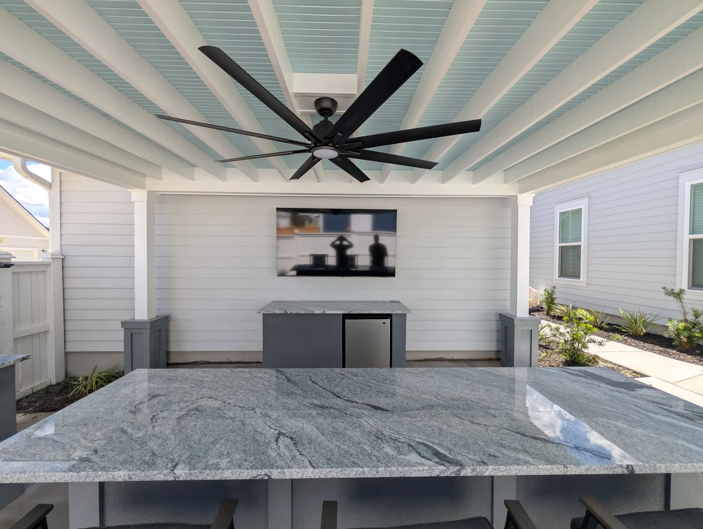
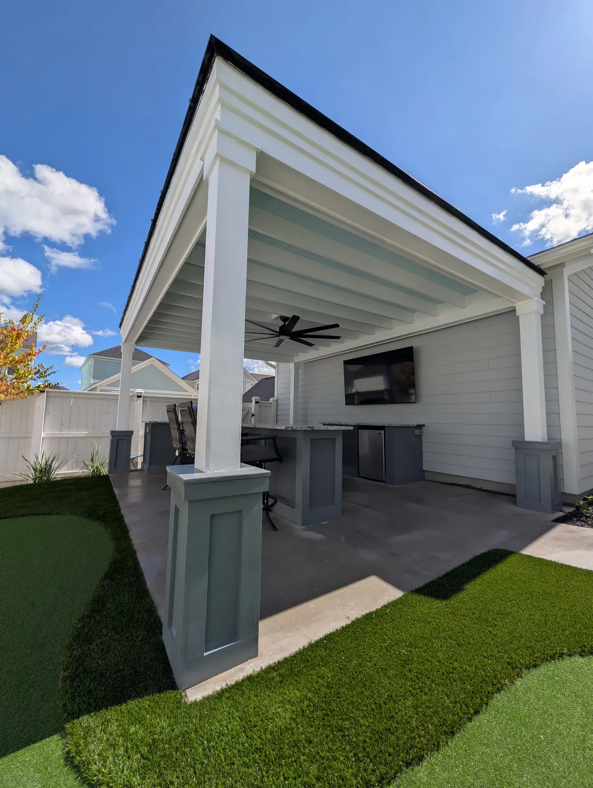
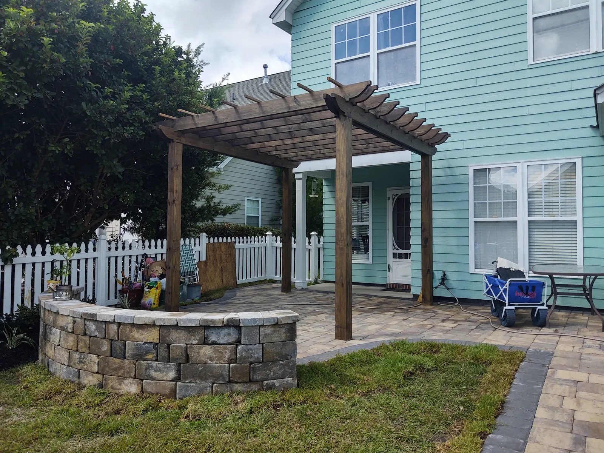

Creating the Perfect Outdoor Kitchen for Charleston Homes
Charleston’s warm climate, coastal breezes, and love for outdoor entertaining make an outdoor kitchen one of the most valuable - and enjoyable - additions you can make to your home. Whether you live in West Ashley, Mount Pleasant, Summerville, Daniel Island, or along the marsh in Johns Island, a well-designed outdoor kitchen expands your living space, boosts your home’s value, and creates a place where friends and family naturally gather.
At Cramers Landscaping, we design and build custom outdoor kitchens Charleston homeowners trust for long-term durability, coastal performance, and timeless Lowcountry style. If you’re thinking about upgrading your backyard with the perfect cooking and entertaining space, this complete guide walks you through the essentials - from layout to appliances to choosing materials that withstand Charleston’s unique climate.
Why Outdoor Kitchens Are So Popular in Charleston

Charleston is practically made for outdoor living. With mild winters, warm nights, and nearly year-round sunshine, it’s no surprise more homeowners are transforming their patios, porches, and pool areas into full outdoor living spaces.
1. Perfect Weather for Cooking Outdoors
Charleston’s seasonal warmth allows homeowners to use their outdoor kitchens comfortably 10–12 months out of the year. Whether you’re grilling in March or hosting a fall oyster roast, an outdoor kitchen becomes a natural extension of your home.
2. High Return on Investment
Outdoor kitchens consistently rank as one of the top ROI improvements for Southern homes. Buyers look for outdoor amenities, and a professionally installed kitchen increases usable square footage without the expense of an indoor addition.
3. Ideal for Entertaining
From backyard parties to Lowcountry boils to game-day gatherings, outdoor kitchens make hosting easier. Guests can mingle outdoors while you cook, and you don’t have to worry about smoke, sizzling pans, or heat inside your home.
4. Adds Personality and Function
Every outdoor kitchen we build at Cramers Landscaping is fully customized. Whether you want a built-in smoker, pizza oven, wine fridge, or a spacious bar area, your outdoor space becomes a personalized retreat that reflects your lifestyle.
Key Elements of the Perfect Outdoor Kitchen
Designing a functional, beautiful outdoor kitchen requires careful planning. Below are the essential features every Charleston outdoor kitchen should include - and tips for choosing the best options for Lowcountry weather.
1. Choosing the Right Layout
Your layout determines traffic flow, prep space, storage, and overall comfort. The most popular layouts for Charleston homes include:
L-Shaped Kitchens
Ideal for patios, pool decks, or small backyards. Provides dedicated cooking and prep zones without overwhelming the space.
U-Shaped Kitchens
Perfect for homeowners who love to entertain. Provides ample countertop space, appliance areas, and built-in bar seating.
Straight-Line or Island Style
Great for minimalist or small outdoor areas. Keeps everything within arm’s reach while allowing flexibility for additional features.
Built Against Existing Structures
Many Charleston homes feature porches, retaining walls, or pergolas that integrate beautifully with a built-in kitchen. This saves space and creates a seamless visual connection between your indoor and outdoor living areas.
Tip for Charleston homeowners:
Position your kitchen to take advantage of breezes coming off the water—especially in areas like James Island, Mount Pleasant, and Daniel Island. This helps with ventilation and keeps your cooking area cooler.
2. Appliances Built for Lowcountry Living

Not all outdoor appliances are created equal. Because Charleston faces humidity, salt-laden air, high heat, and sudden storms, your appliances must be rated for outdoor use.
Built-In Grills & Smokers
Gas, propane, charcoal, or ceramic smokers like the Big Green Egg - choose based on your style of cooking. Charleston food culture leans heavily on BBQ, seafood, and smoked dishes, making a grill the heart of your setup.
Side Burners & Cooktops
Perfect for boiling shrimp, simmering sauces, or sautéing vegetables without stepping indoors.
Refrigeration
Undercounter fridges, wine coolers, beverage drawers, or ice makers keep drinks ready to serve - ideal for summer parties or after-work relaxation.
Outdoor Sinks
Cold-water sinks simplify cleanup, while hot-water models can be added with proper utility hookups.
Optional Add-Ons
Many Charleston homeowners elevate their space with additions like:
- Pizza ovens
- Kegerators
- Warming drawers
- Bar seating
- Integrated sound systems
- Outdoor fireplaces or fire pits
Pro Tip: Ensure all appliances are marine-grade or rated for coastal conditions to avoid corrosion.
3. Countertop and Cabinet Materials That Stand Up to Charleston Weather
Charleston’s climate demands smart material selection. High humidity, salty winds, and intense UV exposure require surfaces that resist rust, mold, and fading.
Recommended Countertop Materials:
- Granite – Beautiful, durable, heat-resistant
- Sealed Stone – A natural, organic look that pairs well with Lowcountry architecture
- Concrete – Modern, customizable, and extremely strong
- Stainless Steel – Easy to clean and weather-resistant
Recommended Cabinetry & Storage:
- Marine-grade stainless steel
- Weatherproof composite materials
- Stone-faced custom cabinetry
- Treated or hardwood cabinetry
Avoid untreated wood or low-quality metals, as they deteriorate quickly in coastal climates.
4. Integrating Your Outdoor Kitchen Into Your Landscape

One hallmark of a Cramers Landscaping outdoor kitchen is seamless integration with your surrounding environment. Your kitchen should look like it belongs - not like it was added as an afterthought.
We Consider:
- Existing hardscapes like patios and retaining walls
- Landscape beds, trees, and surrounding plant materials
- Drainage and grading
- Irrigation zones that may need rerouting
- Shade structures like pergolas, pavilions, or porches
By designing the kitchen as part of the entire landscape plan, we ensure it blends effortlessly and remains functional for years to come.
5. Designing for Durability in Charleston’s Coastal Climate
Coastal conditions are beautiful - but harsh. Our construction standards ensure your kitchen stands up to the elements.
We Use:
- Non-corrosive stainless-steel hardware
- UV-resistant finishes
- Moisture-tolerant materials
- Properly designed drainage
- Stable bases that won’t shift in sandy or clay soils
Because every neighborhood - from Summerville’s sandy soil to the marshfront lots of Johns Island - presents unique challenges, our team tailors each build to the environment.
Working With Cramers Landscaping: The Design + Build Process

Creating a professional outdoor kitchen is a collaborative experience. Our turnkey process ensures every detail is planned, sourced, and perfectly installed.
1. Consultation & Site Walk
We evaluate your space, understand your goals, take precise measurements, and discuss your cooking and entertaining style.
2. Custom Layout & Material Selection
We recommend appliances, layout options, and material samples that fit your home’s aesthetic and your lifestyle.
3. Utility Coordination
If gas, electrical, or plumbing work is required, we coordinate with licensed partners to ensure everything is code-compliant.
4. Professional Installation
Our team constructs the kitchen to spec, installs appliances, and ensures drainage and layouts are accurate.
5. Final Walkthrough
We test all appliances, check safety and connections, and provide maintenance tips for long-term use.
Enhancing Your Outdoor Kitchen With Additional Features
Once your kitchen is complete, consider adding:
Outdoor Lighting
Pathway lights, under-counter LEDs, and overhead fixtures increase visibility and ambience.
Landscaping Enhancements
Palm trees, ornamental grasses, and low-maintenance beds soften the hardscapes and elevate your outdoor experience.
Hardscapes
Seating walls, pavers, pergolas, and fireplaces complete your backyard oasis.
Ready to Build Your Dream Outdoor Kitchen in Charleston?

Cramers Landscaping is Charleston’s trusted name for custom outdoor kitchens - from concept to cookout. Whether you’re upgrading a current patio or designing a full backyard retreat, our team delivers craftsmanship, communication, and long-lasting quality.
Serving Charleston, Mount Pleasant, Summerville, Daniel Island, Johns Island, Kiawah Island, Folly Beach, Sullivans Island, and more.
Turn your backyard into the heart of your home. Contact Cramers Landscaping today for a free consultation.
Planning a Project of Your Own?
See everything we design and build, or get in touch to talk through your ideas with Doug and Zach.